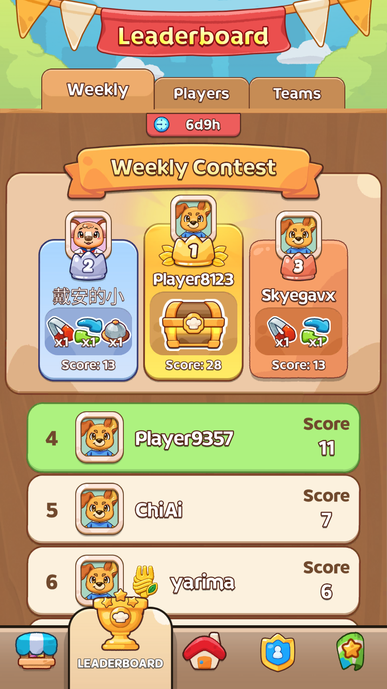
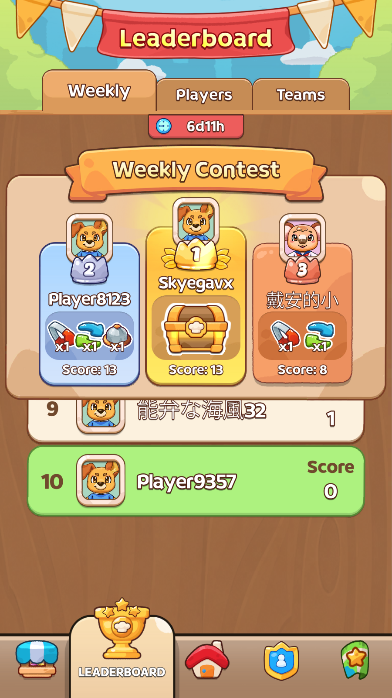

Thi đấu tuần (Weekly Contest)
Mô tả
- Mỗi tuần server xếp người chơi vào nhóm 10 người; ai tích điểm cao hơn bằng cách thắng màn chính sẽ lên hạng, top 3 nhận thưởng khi tuần kết thúc.
- Điểm mỗi màn thắng: thường 1, hard 3, super hard 5. Tuần tính theo UTC, đổi vào thứ Hai 00:00.
- Thưởng: hạng 1 = rương (100 gem + 4 booster + 60 tim vô hạn), hạng 2 = 3 booster, hạng 3 = 2 booster.
- Mở ở Day 10, nằm trong tab Weekly của Bảng xếp hạng (không có tab riêng, Playtest không thấy trang luật).
- Hạng 1 cộng
weeklyContestTop1vào điểm xếp hạng chung.
Thiết kế chi tiết
Tóm tắt thiết kế
- Playtest Nhóm 10 người: ảnh cuộn thấy hạng 1-10, người chơi ở hạng 10 lúc 0 điểm.
- Code Điểm theo độ khó màn (1 / 3 / 5), cùng thang với Team Treasure, nên người chơi giỏi thắng màn hard nhanh hơn.
- APK Chỉ top 3 có thưởng: hạng 1 là rương lớn (100 gem + 4 booster + 60 tim vô hạn), hạng 2-3 là booster.
- Live 16/11 Save thật: người chơi ở 4 tuần (202643 / 44 / 46 / 47); không có tuần 202645 trong save (suy luận: không tham gia), điểm cao nhất 11.
- Code Hạng 1 cộng
weeklyContestTop1, mà mỗi điểm này đáng 100 trongrankScore(Leaderboard). - Nhận định Không có tab riêng, nằm trong tab Weekly của Leaderboard: tính năng nhẹ, giữ người chơi quay lại hằng tuần.
Luồng người chơi từng bước
- Mở LeaderboardNgười chơi PlaytestTab Weekly hiện top 3 kèm phần thưởng và timer 6d11h.

Weekly ở Day 13: timer 6d11h, hạng 1 Skyegavx (rương, 13 điểm), hạng 2 Player8123 (3 booster), hạng 3 (2 booster). - Thắng mànHệ thống Code+1 / +3 / +5 điểm vào
weeklyContestScore[tuần]và đẩy hồ sơ lên server. - Xem thứ hạng nhómNgười chơi PlaytestSau 8 màn thắng (11 điểm) người chơi lên hạng 4.

Day 20, sau 7 màn thắng: người chơi hạng 4 với 11 điểm; timer 6d9h. 
Cuộn xuống: hạng 9 điểm 1, hạng 10 là người chơi (nền xanh) 0 điểm: nhóm đủ 10 người. - Hết tuầnHệ thống CodeChốt hạng, top 3 mở popup rương, Claim gửi
cwc, vào nhóm mới.


Thưởng theo hạng (SOWeeklyContestConfig.listRankConfig)
| Hạng | Phần thưởng |
|---|---|
| 1 | 100 gem + Pick + ShiftUp + AutoCook + StackBox + UnlimitedHeart 60 |
| 2 | Pick + ShiftUp + AutoCook |
| 3 | Pick + ShiftUp |
| 4-10 | Không có |
Nguồn: asset; Playtest ảnh hạng 1 (rương), hạng 2 (3 booster), hạng 3 (2 booster) khớp asset.
Điểm các tuần trong save 16/11
| Tuần | Điểm | Trạng thái |
|---|---|---|
| 202643 | 4 | finished |
| 202644 | 1 | finished |
| 202646 | 1 | finished |
| 202647 | 11 | đang chạy |
Nguồn: save_end, ProfileDbModel.weeklyContestScore và WeeklyContestDbModel.dataByWeek.
Vận dụng cho game khác
- Nhóm 10 người là quy mô đủ nhỏ để người chơi mới thấy mình có cơ hội vào top 3, đủ lớn để thấy áp lực.
- Chỉ thưởng top 3 nhưng đặt cả ba hạng ở mức booster rẻ: chi phí thưởng thấp, vẫn tạo động lực.
- Dùng chung thang điểm 1 / 3 / 5 giữa nhiều sự kiện để người chơi không phải học lại luật.
Bảng tổng hợp mọi tính năng đã làm chi tiết: FoodiePop_ThietKeChiTiet.xlsx.
Mở khóa & điểm vào
RC r1plugin_lvunlock_weeklycontest mặc định 10 (APK), live 16/11 không ghi đè. Mở khi số màn chính đã thắng ≥ 9 (WeeklyContestManager.IsUnlocked, SOWeeklyContestConfig.LevelUnlock). Lần đầu: PopupWeeklyContestUnlockCtrl và playTutorial = true, đặt tuần hiện tại + endTime cuối tuần.
Điểm vào:
- Tab Weekly trong tab Rank (
UILeaderboardTabWeeklyCtrl→WeeklyContestHomeTabUICtrl) - Icon + đếm ngược Weekly trên Home (
WeeklyContestFIconUICtrl) - Popup kết quả tuần tự bật khi vào tab Weekly sau khi tuần cũ kết thúc (
PopupWeeklyContestFinishCtrl)
Cách hoạt động
- Đủ Day 10 →
CheckPlayTutorialUnlock: đặtcurrentWeek = WeekUtcNow,endTime= cuối tuần UTC, mở popup mở khoá. - Mở tab Weekly:
WeeklyContestManager.FetchLeaderboard→ nếu chưa có nhóm tuần này thìTryJoinRacegọiJoinRace(lệnhjwc: id, n, a, cc, lg, i). - Server trả
rk(hạng của mình),arr(nhóm 10 người của tuần này) vàpRk,pArr(nhóm tuần trước). Client lưudataByWeek[weekId].listPlayer(id thành viên). ForceFetchRankđọc điểm / hồ sơ từng thành viên (readPrf),HandleSortRanksắp theo điểm giảm dần, gánRank; chỉ gọi lại sau 600 s (CappingTimeFetchRank).- Mỗi màn chính thắng:
LevelPlayController.OnLevelWingọiWeeklyContestManager.ChangeScore(1 / 3 / 5)→ProfileManager.ChangeWeeklyContestScore(weekId, score); điểm tuần nằm trongProfileDbModel.weeklyContestScore. - Hết tuần (
WeekUtcNow>currentWeek):NeedFinalFetchbuộc kéo bảng cuối, rồiFinishWeektính hạng, ghi analyticsweekly_contest_complete, hạng 1 cộngweeklyContestTop1. - Có thưởng (hạng 1-3) →
PopupWeeklyContestFinishCtrlmở rương; bấm Claim →OnClaimFinishRewardgọiClaimRank(lệnhcwc) và bắt đầu tuần mới.
Ảnh chụp
Bấm ảnh để phóng to, dùng phím ← → để chuyển ảnh. Nhãn màu cho biết nguồn bằng chứng của ảnh.
Phần thưởng
| Ngữ cảnh | Phần thưởng | Evidence |
|---|---|---|
| Hạng 1 cuối tuần | Rương: 100 gem + 4 booster (Pick, ShiftUp, AutoCook, StackBox) + UnlimitedHeart 60; +1 weeklyContestTop1 | SOWeeklyContestConfig.GetRankReward |
| Hạng 2 | BoosterIngredientPick + BoosterShiftUpRow + BoosterAutoCook | SOWeeklyContestConfig.GetRankReward |
| Hạng 3 | BoosterIngredientPick + BoosterShiftUpRow | SOWeeklyContestConfig.GetRankReward |
| Hạng 4-10 | Không có thưởng | WeeklyContestManager.FinishWeek |
Số liệu chính
| Chỉ số | Giá trị | Nguồn |
|---|---|---|
| Kích cỡ nhóm | 10 | save_end WeeklyContestDbModel.listPlayer |
| Điểm mỗi màn | 1 / 3 / 5 | LevelPlayController.OnLevelWin |
| Số hạng có thưởng | 3 (top 3) | SOWeeklyContestConfig.asset |
| Cache bảng | 600 s | SOWeeklyContestConfig.CappingTimeFetchRank |
| Mã tuần mẫu | 202647 (năm 2026, tuần 47), hết 23/11/2026 00:00 UTC | save_end WeeklyContestDbModel |
| Điểm mẫu của người chơi | 4, 1, 1, 11 (tuần 43, 44, 46, 47) | ProfileDbModel.weeklyContestScore |
Use case (9)
Bấm vào từng use case để mở. Mở/đóng tất cả
UC-01 Mở khoá Weekly Contest
Các bướcWeeklyContestManager.CheckPlayTutorialUnlockthấyIsTutorialUnlockPendingcurrentWeek = TimerManager.WeekUtcNow,endTime=GetEndOfCurrentWeekUtc(Chủ nhật hết ngày, ra Unix giây), lưuWeeklyContestDbModel- Mở
PopupWeeklyContestUnlockCtrl
| Actor | Player |
|---|---|
| Trigger | Thắng màn chính đạt ngưỡng |
| Điều kiện | MainLevelCompleted ≥ LevelUnlock - 1 |
| Kết quả | Tab Weekly bật; icon Home có đếm ngược |
| Quy tắc / số liệu | Mặc định Day 10, WeeklyContestFIconUICtrl bật khi MainLevelCompleted ≥ LevelUnlock - 1. |
| Evidence | WeeklyContestManager.CheckPlayTutorialUnlock |
UC-02 Vào nhóm 10 người
Các bướcFetchLeaderboard(force)→TryJoinRace(weekData)WeeklyContestServer.JoinRacePOST lệnhjwc(timeout 10 s)- Lưu
listPlayercủa tuần vàodataByWeek
| Actor | System |
|---|---|
| Trigger | Mở tab Weekly lần đầu trong tuần |
| Điều kiện | Online, có ServerID |
| Kết quả | Nhóm 10 người (Live 16/11: tuần 202647 có 10 id) |
| Quy tắc / số liệu | Server tự ghép nhóm; client chỉ nhận danh sách. |
| Evidence | WeeklyContestManager.TryJoinRace |
UC-03 Cộng điểm khi thắng màn
Các bướcLevelPlayController.OnLevelWinđọc độ khó màn từSOLevelConfig- diff = 2 → 5 điểm, diff = 1 → 3 điểm, còn lại 1
WeeklyContestManager.ChangeScore(score)→ProfileManager.ChangeWeeklyContestScore(WeekUtcNow, score)
| Actor | System |
|---|---|
| Trigger | Thắng màn chính |
| Điều kiện | Đã mở khoá |
| Kết quả | weeklyContestScore[tuần] += score rồi đẩy hồ sơ lên server |
| Quy tắc / số liệu | Dưới ngưỡng mở khoá thì bỏ qua. Save thật: tuần 202647 = 11 điểm sau 7 màn thắng. |
| Evidence | WeeklyContestManager.ChangeScore |
UC-04 Xem bảng nhóm
Các bướcWeeklyContestHomeTabUICtrl.ShowContentdựng 10 dòngPlayerWCRankItemUICtrl(hạng, tên, avatar, điểm, icon thưởng top 3)UpdateUITimeLeftcập nhật thời gian còn lại mỗi giây (Playtest: 6d11h)
| Actor | Player |
|---|---|
| Trigger | Bấm tab Weekly |
| Điều kiện | Đã vào nhóm |
| Kết quả | Bảng hiện; dòng mình nền xanh |
| Quy tắc / số liệu | Hạng 1-3 kèm icon phần thưởng (Playtest). |
| Evidence | WeeklyContestHomeTabUICtrl.ShowContent |
UC-05 Hết tuần, nhận thưởng
Các bướcWeeklyContestHomeTabUICtrl.CheckFinishWeekkiểmNeedFinalFetch, kéo bảng cuốiWeeklyContestManager.FinishWeek(true): hạng =Rank + 1, ghiweekly_contest_complete- Hạng 1 →
ProfileManager.ChangeWeeklyContestTop1(1) SOWeeklyContestConfig.GetRankReward(rank)có phần thưởng →PopupWeeklyContestFinishCtrl.Open- Bấm mở rương (
OpenChest) rồi Claim:ClaimRewardAndNextRace→OnClaimFinishReward→WeeklyContestServer.ClaimRank(lệnhcwc)
| Actor | Player |
|---|---|
| Trigger | Vào tab Weekly sau khi tuần kết thúc |
| Điều kiện | currentWeek < WeekUtcNow |
| Kết quả | Thưởng vào kho; finished = true cho tuần cũ; vào tuần mới |
| Quy tắc / số liệu | Chỉ hạng 0-2 (top 3) có thưởng. |
| Evidence | WeeklyContestManager.FinishWeek |
UC-06 Hết tuần nhưng chưa kéo được bảng cuối
Các bướcFinishWeek(false)(quaSkipFinishWeek) ghi log "final rank not fetched, settled with no reward"- Tuần được chốt không thưởng
| Actor | System |
|---|---|
| Trigger | Mất mạng lúc chốt tuần |
| Điều kiện | _finalFetchedWeek ≠ tuần cũ |
| Kết quả | Mất thưởng nếu không có bảng cuối |
| Quy tắc / số liệu | Thiết kế chọn an toàn: không thưởng khi thiếu bảng. |
| Evidence | WeeklyContestManager.SkipFinishWeek |
UC-07 Người chơi mới vào giữa tuần
Các bướcResetData/ReloadDatakiểmcurrentWeek,endTimeTryJoinRacevẫn ghép vào nhóm tuần hiện tại
| Actor | System |
|---|---|
| Trigger | Mở khoá khi tuần đã chạy |
| Điều kiện | — |
| Kết quả | Bắt đầu 0 điểm |
| Quy tắc / số liệu | Suy luận: nhóm tuần tính từ tuần UTC, không phải từ ngày mở khoá. |
| Evidence | WeeklyContestManager.ReloadData |
UC-08 Điểm cộng sai tuần (đổi tuần giữa màn)
Các bướcChangeScoreluôn dùngWeekUtcNowtại thời điểm thắng, không dùngcurrentWeek
| Actor | System |
|---|---|
| Trigger | Thắng màn đúng lúc sang tuần mới |
| Điều kiện | — |
| Kết quả | Điểm vào tuần mới |
| Quy tắc / số liệu | Suy luận từ code. |
| Evidence | WeeklyContestManager.ChangeScore |
UC-09 Thông tin / luật
Các bướcWeeklyContestHomeTabUICtrl.OpenPopupInfomởPopupWeeklyContestInfoCtrl
| Actor | Player |
|---|---|
| Trigger | Nút info |
| Điều kiện | — |
| Kết quả | Popup luật |
| Quy tắc / số liệu | Code có popup nhưng Playtest 16/11 không thấy nút info nào hoạt động trên banner. |
| Evidence | WeeklyContestHomeTabUICtrl.OpenPopupInfo |
Cấu hình (10)
Gộp mọi nguồn: const trong code, giá trị mặc định trong APK, storage key, AB test, cờ server.
| Nguồn | Key | Kiểu | Giá trị | Ý nghĩa | Nơi định nghĩa |
|---|---|---|---|---|---|
| code const | SOWeeklyContestConfig.CappingTimeFetchRank | int s | 600 | Giãn cách kéo lại bảng | SOWeeklyContestConfig |
| json default | r1plugin_lvunlock_weeklycontest | int | 10 (APK) / không ghi đè (Live 16/11) | Day mở Weekly | frc_defaults_115.json; GameProgressScenario.get_WeeklyContestUnlockLevel |
| code | điểm / màn | int | thường 1, hard 3, special 5 | Điểm Weekly mỗi màn thắng (theo LevelMainCfModel.diff) | LevelPlayController.OnLevelWin |
| asset | listRankConfig[0] | list | 100 gem (Hard) + BoosterIngredientPick, BoosterShiftUpRow, BoosterAutoCook, BoosterStackBox x1 + UnlimitedHeart 60 | Hạng 1 | SOWeeklyContestConfig.asset |
| asset | listRankConfig[1] | list | BoosterIngredientPick + BoosterShiftUpRow + BoosterAutoCook x1 | Hạng 2 | SOWeeklyContestConfig.asset |
| asset | listRankConfig[2] | list | BoosterIngredientPick + BoosterShiftUpRow x1 | Hạng 3 | SOWeeklyContestConfig.asset |
| server info | kích cỡ nhóm | int | 10 | Số người trong một nhóm tuần | save_end WeeklyContestDbModel.listPlayer (Live 16/11) |
| storage key | WeeklyContestDbModel.SaveGameModel | object | pt (playTutorial), cw (currentWeek), et (endTime), dw[] {w, f, p[]} | Save lên server | WeeklyContestDbModel |
| storage key | ProfileDbModel.weeklyContestScore | Dictionary<int,int> | {202643: 4, 202644: 1, 202646: 1, 202647: 11} (Live 16/11) | Điểm theo tuần của người chơi | ProfileDbModel |
| storage key | ProfileDbModel.weeklyContestTop1 | int | 0 (Live 16/11) | Số lần về nhất, x 100 trong rankScore | ProfileDbModel |
Backend / server
| Command | Chiều | Mục đích |
|---|---|---|
jwc | client→server (ghi) | Vào cuộc đua tuần: id, n (tên), a (avatar), cc, lg, i (JSON hồ sơ); trả rk, arr, pRk, pArr |
cwc | client→server (ghi) | Nhận thưởng hạng tuần: id |
readPrf | client→server (đọc) | Đọc hồ sơ / điểm từng thành viên nhóm (ForceFetchRank) |
pushPrf | client→server (ghi) | Đẩy điểm tuần của mình (trong info) |
Giao diện (UI)
| Element | Class | Mục đích |
|---|---|---|
| Bảng Weekly trong tab Rank | _GAME.WeeklyContest.WeeklyContestHomeTabUICtrl | Timer, 10 dòng hạng, mở popup info |
| Dòng người chơi | _GAME.WeeklyContest.PlayerWCRankItemUICtrl | Hạng, tên, điểm, icon thưởng |
| Icon Home + đếm ngược | _GAME.WeeklyContest.WeeklyContestFIconUICtrl | Lối tắt |
| Popup kết quả tuần | _GAME.WeeklyContest.PopupWeeklyContestFinishCtrl | Mở rương, Claim |
| Popup mở khoá | _GAME.WeeklyContest.PopupWeeklyContestUnlockCtrl | Lần đầu |
| Popup luật | _GAME.WeeklyContest.PopupWeeklyContestInfoCtrl | Mô tả cuộc thi |
Analytics (3)
| Event | Tham số | Khi nào |
|---|---|---|
weekly_contest_join | week, contest_id, level | Vào nhóm tuần (LogEventWeeklyContestJoin) |
weekly_contest_complete | week, place, contest_id, level | Chốt tuần (LogEventWeeklyContestComplete) |
weekly_contest_claim | week, place, contest_id, level | Nhận thưởng (LogEventWeeklyContestClaim) |
Storage keys
WeeklyContestDbModel (file R1/FEyl4v1eKoFynqVG trong save) ProfileDbModel.weeklyContestScore ProfileDbModel.weeklyContestTop1
Còn thiếu / chưa xác minh
- Ý nghĩa tham số
lgtrong lệnhjwcchưa xác định (kiểu int; suy luận: nhóm / liên đoàn). - Thuật toán ghép nhóm của server (cùng trình độ?) chưa đọc được; chỉ biết nhóm 10 người ở save thật.
- Cách xếp hạng khi bằng điểm trên client (
HandleSortRank) chưa đọc chi tiết; server cũng trảrk. PopupWeeklyContestInfoCtrlcó trong code nhưng Playtest 16/11 không mở được trang luật (không có nút info).- Đơn vị
UnlimitedHeart60 là suy luận (phút).
Tính năng liên quan
Bảng xếp hạng Hồ sơ (avatar, khung, huy hiệu) Định danh server và đồng bộ save Đội (Team) Booster trong màn Tim (mạng)
Nguồn đã đọc
_analysis/code/decompiled/R1Plugins/_GAME.WeeklyContest.WeeklyContestManager.c_analysis/code/decompiled/R1Plugins/_GAME.Levels.LevelPlayController+__c__DisplayClass5_0.c_analysis/code/stubs/R1Plugins/_GAME.WeeklyContest.SOWeeklyContestConfig.cs_rip/ExportedProject/Assets/MonoBehaviour/SOWeeklyContestConfig.asset_analysis/live/fp_20261116/save_end/R1 (WeeklyContestDbModel, ProfileDbModel)_analysis/live/fp_20261116/RESULTS_LIVE.md